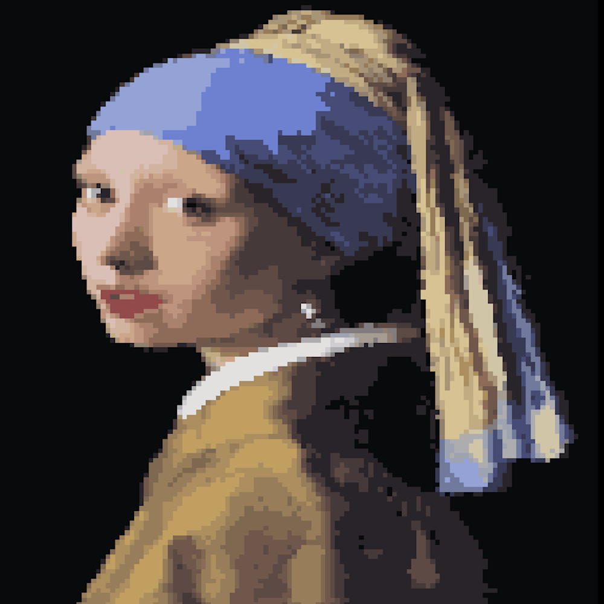
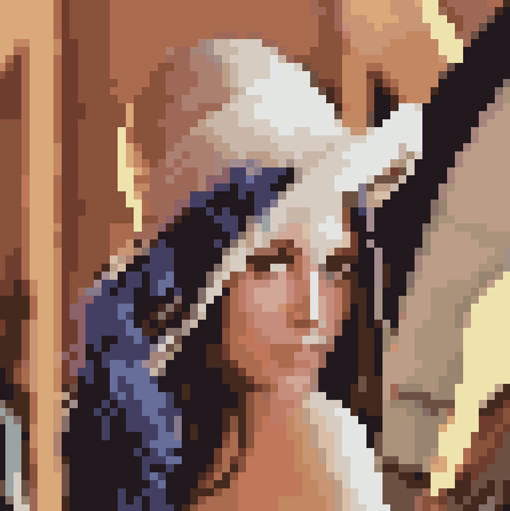

Pyxeled
Beautiful pixel art powered by machine learning




About
Transforming normal photographs into aesthetic pixel art. That's Pyxeled. Based on the paper Pixelated Image Abstraction by Gerstner et al., this application leverages intelligent clustering algorithms to optimally render images at lower resolutions and limited color palettes.
All the code for Pyxeled is freely available on its public GitHub repository. Additionally, you can find out more about me and other projects I've developed on my website.
How it Works
Pixel art derives its iconic aesthetic from two fundamental artistic constraints. The first is the characteristic low resolution of these images. In fact, a typical pixel art portrait might be 64 x 128 pixels or even smaller. The second constraint is that the image should use a limited color palette. That is, the number of distinct colors used in the end product should be minimal. When converting a normal image into pixel art, Pyxeled must deal with both of these constraints. It does so by the clever use of two clustering algorithms.
First, we use Simple Linear Interative Clustering (SLIC) to help preserve image features while dropping resolution. SLIC is similar to k-means clustering in a 5-dimensional positional / color space. More specifically, each iteration of SLIC involves clustering input pixels into groups called super-pixels. In particular, each input pixel is put in the super-pixel which is closest to it in color and position. Then, each super-pixel is assigned the average position and color of the pixels assigned to it. Initially, we assign each super-pixel the average color of all pixels in the input image and space them equally positionally. There is one super-pixel for each pixel in the output image.
Now to optimally assign colors to these super-pixels while maintaining the constraint of limited palette size, we use a second clustering algorithm called Mass Constrained Deterministic Annealing (MCDA). This algorithm is significantly more complicated than SLIC and is based on the way atomic particles interact and bond as the temperature of a sytem is lowered. More precisely, each super-pixel represents a particle and each color in our palette represents a cluster of particles. Initially, there is a higher temperature and thus the super-pixels are not clustered in any meaningful way. However, as time progresses we simulate the way clusters form as the temperature of our system lowers. You can read more about this process in Kenneth Rose's original paper on MCDA.
The most interesting aspect of this paper, however, is the way these two clustering algorithms are intertwined. After each iteration of SLIC we use the new colors associated with the super-pixels to run an iteration of MCDA. We then use the palette color each super-pixel is closest to in order to inform another iteration of SLIC. This continues until MCDA converges on an optimal color palette of the size dictated by the user. The palette colors associated with each super-pixel is then used to construct the final output image.
It's worth noting that several modifications were done to SLIC including bilateral filtering of colors and Laplacian smoothing of positions. You can read more about these steps and about all aspects of the algorithms used in Pyxeled in Pixelated Image Abstraction.